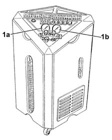

5040B Air conditioning system operational check (pressure)
- Path
- Test > 50 auxiliary units > 5040 AIR CONDITIONING CASING AND COMPONENTS > 5040B Air conditioning system operational check (pressure)
- Kind
- test / check procedure
- Applies to
- all engines; all production periods
- Interactive page
- https://sloeber94.github.io/elrnDB-lThss/en/#/72119
Applies to: all engines; all production periods
Start up the engine and keep it idling.
Connect the air conditioning system repressuring equipment [5040A10] in order to be able to read the low pressure (1°) and high pressure (1b) values.

Make sure that the compressor is switched off.
Switch off the recirculation (LED in button off).
Press the fan speed selector until 6 full bars are shown on the monitor.
Turn the temperature selector until it is in the maximum cold position (LOW).
Check, on the repressurizing equipment low and high pressure gauges, that the pressure values are within 5 bar for TE at around 20°C, and around 6 bar for TE at about 30°C
Switch on the air conditioning (LED in button on).
Within 1 minute check that the reading on the low pressure gauge is 2. 5 - 3.0 bar and the reading on the high pressure gauge is 15 - 16 bar.
Wait until the engine cooling fan comes on.
Check that the pressure reading on the low pressure gauge is 1.5 - 1.8 bar, whilst the reading on the high pressure gauge is 10 - 12 bar.
Check that the engine cooling fan switches off when the high pressure goes down to 11 - 12 bar.